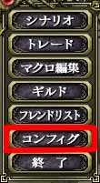
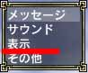
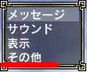

インベイジョンでは数多くのプレイヤーが参加し、また数多くの敵が出現します。そのため普段ゲームをプレーしている時とは比較にならないほどコンピューターに負荷がかかります。具体的な症状として、ラグと急激なfpsの低下によりまともなプレーは不可能な状況になったりします。
現在はシステムの調整によりかなりラグがなくなってきたので、ユーザー側でコンピューターにあった設定に変えることで、かなり快適にできると思います(回線の問題は除く)。
インベイジョンに最中にゲームを快適にプレーするためには、まずゲームのグラフィック関係の設定を変更する必要があります。メニュー2ページ目の「コンフィグ」から「表示」を選択してください。
次に「ゲーム設定」を選び「PCキャラクタ表示数」や「NPCキャラクタ表示数」を通常よりも少ない数値に設定してください。また一般的にキャラクター表示数の次に負荷がかかる(らしい)「影」の項目を「固定」もしくは「なし」に変更することで負荷を減らすことができます。
さらに必要に応じて、「キャラクタ描画距離」や「マップキャラクタ描画距離」、「マップ表示距離」などを変更してください。
 
(左：メニュー 右：「表示」)
(ゲーム設定を選び、設定を変更)
より大きな負荷軽減をはかるには、解像度を小さくしたり、「コンフィグ」から「その他」を選び「Frame/Sec」を60ではなく30に下げるなどしてみてください。

(左：「その他」 右：fps の設定部分)
これらの変更は使っているコンピューターにより異なります。参考になるかは分かりませんが、管理人のコンピューター(Pen4 3.2GHz、Mem
1G、VGA GF6600)では解像度を「1024x768」、影の表示を全て「なし」に「PCキャラクタ表示数」と「NPCキャラクタ表示数」をそれぞれ「8」、「8」に、「Frame/Sec」を30
にしたところ、そこそこまともなプレーができました。
どこかにメモリー4GとGF7900が落ちてないかな・・・。 |